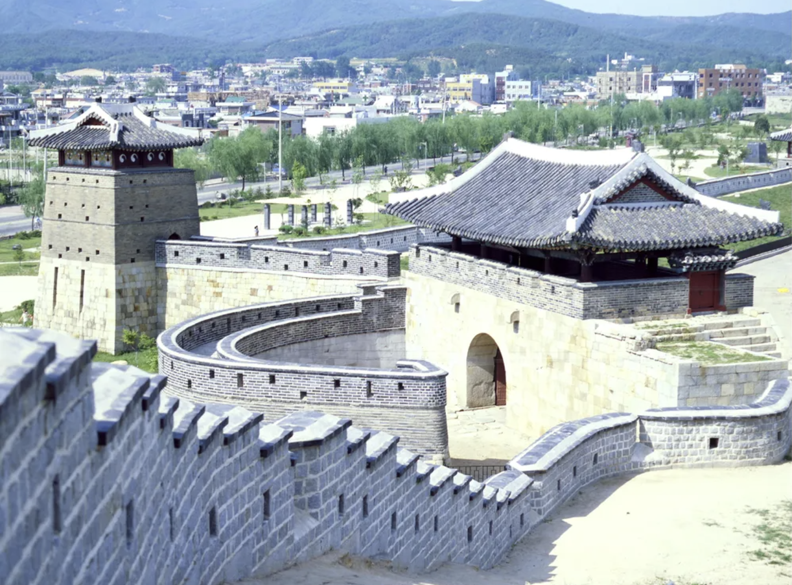
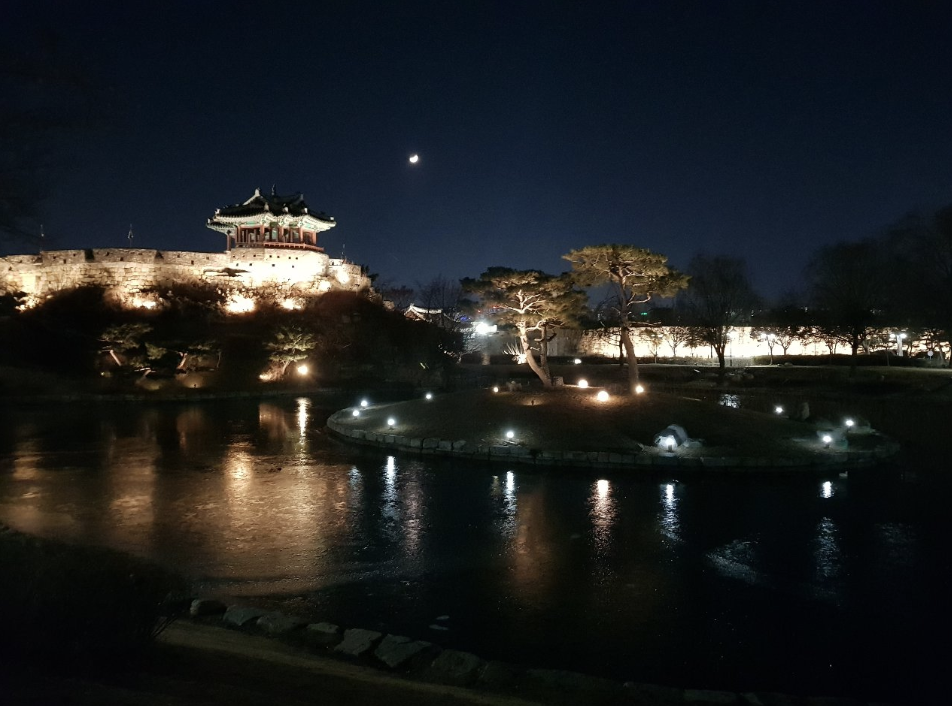
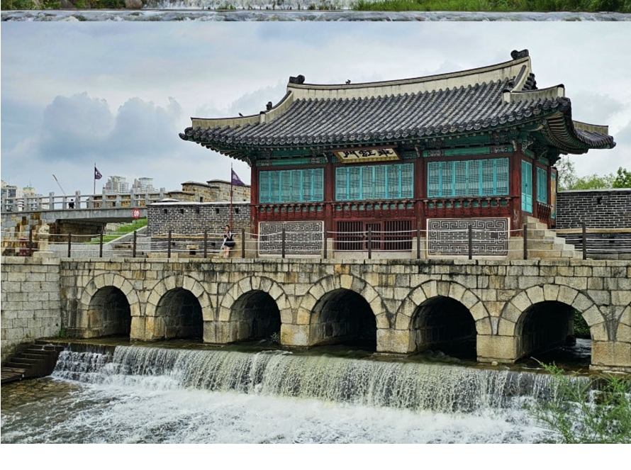
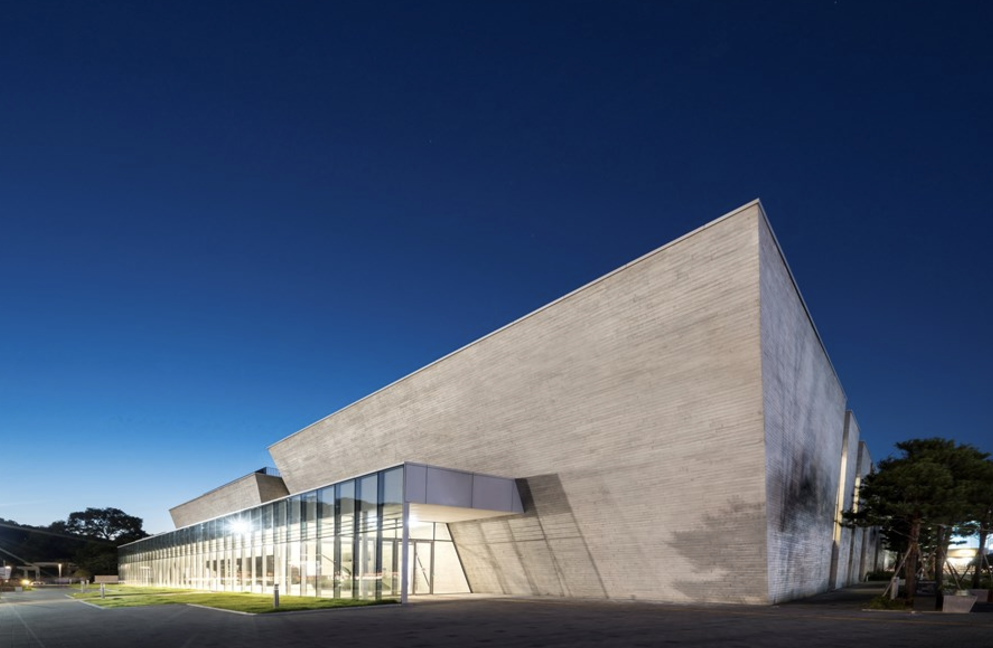
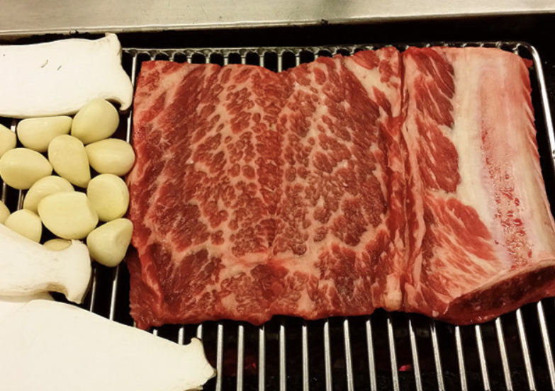
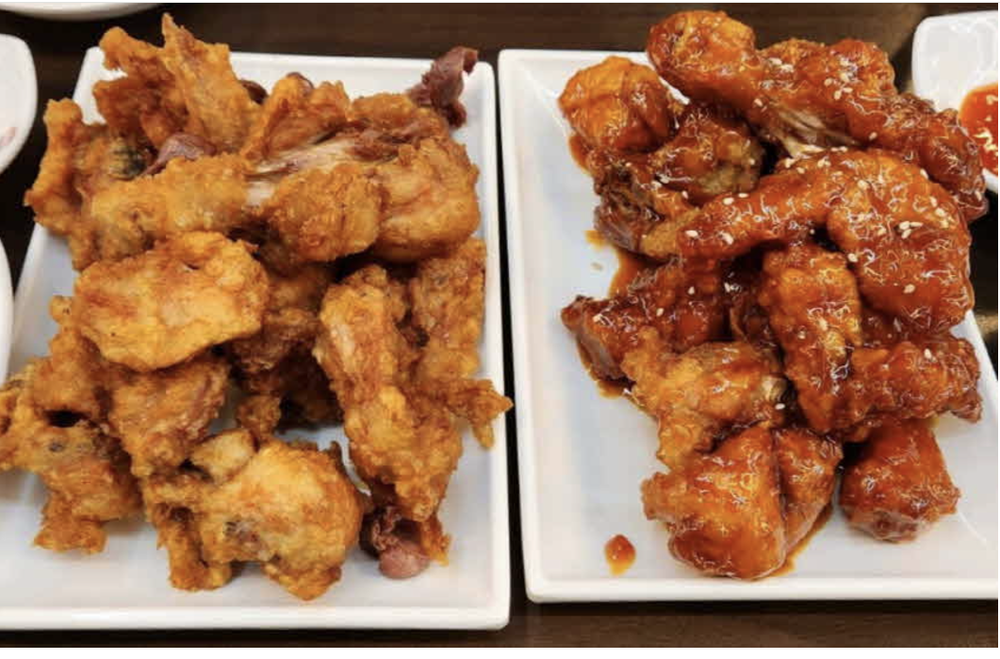
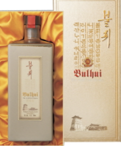

1. 수원에 대하여
경기도 중남부에 위치한 도시. 광역시를 제외하고 가장 인구가 많은 도시이다. 이 도시의 발전은 조선시대로 거슬러 올라가는데, 좋은 위치를 가지고 있지만 한적한 촌락에 불과했던 수원은 정조의 노력으로 발전하게 됐고, 지금의 수원이 될때까지 꾸준한 성장을 이뤄왔다. 시 전역이 화강암으로 둘러쌓여 있고 서쪽에는 산과 남동쪽에는 평야가 있고 기후는 서울과 비슷하다. 지금의 수원은 문화, 경제, 군사 등 나라의 중요한 부분을 담당하는 없어서는 안되는 시가 되었다.
2. 수원여행 계획
수원은 나라의 중심에 위치해 있어서 접근성이 용이하다. 서울에서 30분만 기차를 타면 수원역에 도착할 수 있고 자가용을 타도 경부고속도로를 통해서 1시간이면 도착할 수 있다. 당일치기로도 용이하다.
3. 수원, 여기는 가봐야한다.
1. 행궁동
글쓴이도 수원을 가봤는데 단연 이곳이 최고다. 화성행궁에서 이름을 따온 행궁동은 문화유산을 품은 거리다. 옛날에는 성곽뿐이라 상권이 죽었었지만 행리단길이 들어서면서 젊은이들을 불러모았다. 잘 조성된 카페거리와 식당가에서 배를 채우고 예쁜 거리를 돌아다니며 소품가게도 구경해준다. 드라마와 영화 촬영장으로 화제가 된 곳도 들려주고 밤이 되면 성곽을 걸어다니며 야경을 감상하면 된다. 젊은이들은 꼭 가보는 것을 추천한다.
2. 방화수류정
이곳은 수원화성의 네 개의 각루 중 동쪽에 위치한 곳이다. 지휘소와 감시소의 역할과 동시에 정자의 기능도 하는 곳이다. 독특한 평면과 지붕형태 때문에 바라보는 위치에 따라 다른 모습을 보여주는데, 바위 위에 자리해 주변 자연과 아름답게 어우러진 모습이 정말 장관이다. 성곽길을 걸으며 돌 틈 사이로 볼 수 있는 작은 연못과 풍경들이 정말 예뻐서 꼭 추천하는 코스이다.
3. 수원시립미술관
이 미술관은 행궁동 옆에 위치해 있어 행궁동을 들리고 가면 좋다. 주변에는 전통적인 건축물과 자연이 위치하는데 현대적인 미술관이 들어선 모습이 특이하다. 다른 미술관과 비슷하게 시즌 전시와 상시 전시가 존재한다. 매우 넓고 안에 카페도 들어와 있어 편하게 쉬고 가기도 좋다. 수원의 옛모습과 지금 모습의 비교하는 작품을 보는 것은 현재와 미래에 대해 많은 생각을 하게 만들었으며 수원시를 더욱 사랑하게 되었다.
4. 수원의 먹을거리
1. 수원 왕갈비
수원은 매년 갈비축제를 개최할 정도로 갈비를 특산품으로 밀고 있다. 수원 갈비의 시작은 수원 우만동에 있었던 전국 각지에서 모이는 우시장이라고 전해진다. 다른 지역 갈비와 차이점은 갈비의 크기가 매우 크다는 것인데 갈빗대의 길이가 17cm에 달하는 것도 있다고 한다. 천만 영화 극한직업에서도 수원 왕갈비 통닭이라는 상호명이 등장해 더욱 유명해졌다. 과거 임금님 수라상에도 올라갔던 갈비, 꼭 먹어보고 싶지 않은가 ?
2. 통닭거리
갈비와 함께 수원을 알리는 음식인 통닭이다. 우리나라 치킨 유행의 시작이라고 알려지는 시장 통닭. 그 시장 통닭은 수원 팔달문 부근에서 시작되었다. 요즘 브랜드 치킨과 비교할 수 없는 닭 크기와 똥집, 닭발까지 튀겨주는 시장 인심이 지금의 수원 통닭 거리를 만들어왔다. 위에도 언급했던 극한직업 때문에 덩달아 대박이 나서 주말에 방문하면 모든 통닭거리에 줄을 서는 진풍경을 볼 수도 있다.
3. 불휘
수원 전통주로 이름을 알린 불휘는 호박색의 맑고 투명한 빛깔을 띄고 있으며 홍삼, 오미자, 동충하초, 구기자, 복분자 등 12가지의 한약재가 들어가는 건강주이다. 맑고 투명하여 침전이 발생하지 않는 제조기법은 특허를 받은 기술이기도 하다. 수원에서는 이미 인정을 받았고 국내와 해외로 그 이름을 알리고 있다. 전통주를 체험해보고, 선물용으로 사가는 것도 아주 좋다.